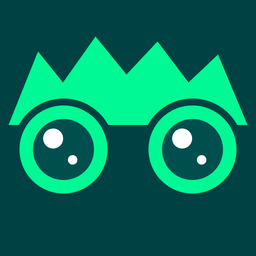

panovi viewer
Escolha a qualidade mais alta
Se a barra de controles não aparecer, clique / toque no vídeo → engrenagem (canto inferior direito) → Qualidade → a maior resolução
Clique ou toque no vídeo para mostrar a barra de controles
ZOOM
VISTA